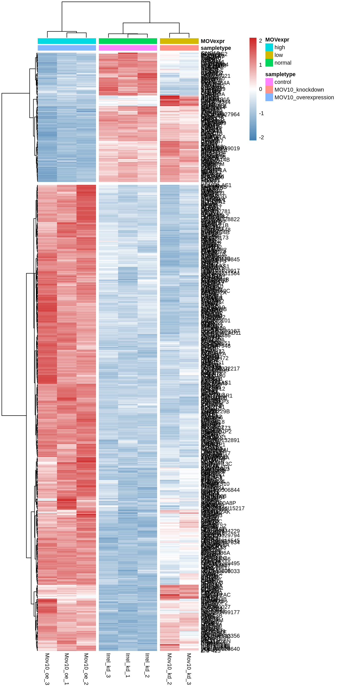

library(DESeq2)
library(ggplot2)
library(ggrepel)
library(pheatmap)
library(RColorBrewer)Caso práctico (MOV10)
Para este análisis se usarán varios paquetes de R algunos de los cuales han sido instalados desde los repositorios CRAN y otro de los de Bioconductor.
Código funciones
createVolcanoPlot <- function(d, log2fc, fdr, max.overlaps = 15) {
colors <- c("UP"="#FC4E07", "none"="#E7B800", "DOWN"="#00AFBB")
d$class <- 'none'
d$class[d$log2FoldChange >= log2fc & d$padj <= fdr] <- 'UP'
d$class[d$log2FoldChange <= -1 * log2fc & d$padj <= fdr] <- 'DOWN'
d$gene <- rownames(d)
up_num=nrow(d[d$class == "UP",])
down_num=nrow(d[d$class == "DOWN",])
p <- ggplot(d, aes(x = log2FoldChange, y = -1 * log10(padj),
shape = class, fill = class, color = class, label = gene)) +
geom_point(size = 3) +
scale_fill_manual(values = colors) +
scale_color_manual(values = c('navy', "#E7B800", 'navy')) +
scale_shape_manual(values = c(21, 20, 21)) +
geom_hline(yintercept = -1 * log10(fdr), linetype="dashed",
color = "black", size=0.5) +
geom_vline(xintercept=c(-1 * log2fc,log2fc), linetype="dashed",
color = "black", size=0.5) +
geom_label_repel(data = d[d$class %in% c('UP', 'DOWN'),],
size= 4,
fontface="bold",
color="firebrick",
fill = 'white',
box.padding=unit(1, "lines"),
point.padding=unit(0.5, "lines"),
segment.colour = "firebrick",
segment.size = 0.5,
segment.alpha = 0.5,
max.overlaps = max.overlaps) +
theme_bw() +
theme(legend.position="top") +
annotate(geom = 'text', label = paste0('UP: ', up_num),
x = Inf, y = Inf, hjust = 1.1, vjust = 1.5) +
annotate(geom = 'text', label = paste0('DOWN: ', down_num),
x = -Inf, y = Inf, hjust = -0.1, vjust = 1.5) +
labs(color = "class")
p
}
crearHeatMap <-function(datos, metadatos) {
pheatmap(as.matrix(datos),
scale = 'row',
clustering_method = 'ward.D2',
cutree_cols = 3,
cutree_rows = 2,
annotation_col = metadatos,
fontsize = 8,
color = colorRampPalette(c("steelblue", "white", "firebrick3"))(100)
)
}Análisis exploratorio de los datos.
Cargar datos
Para ilustrar el uso de DESeq usaremos el dataset MOV10. Cargamos los datos de la matriz de cuentas sin normalizar:
df.cts <- read.table("data/Mov10_full_counts.txt", header=T, row.names=1)
head(df.cts)| Mov10_kd_2 | Mov10_kd_3 | Mov10_oe_1 | Mov10_oe_2 | Mov10_oe_3 | Irrel_kd_1 | Irrel_kd_2 | Irrel_kd_3 | |
|---|---|---|---|---|---|---|---|---|
| 1/2-SBSRNA4 | 57 | 41 | 64 | 55 | 38 | 45 | 31 | 39 |
| A1BG | 71 | 40 | 100 | 81 | 41 | 77 | 58 | 40 |
| A1BG-AS1 | 256 | 177 | 220 | 189 | 107 | 213 | 172 | 126 |
| A1CF | 0 | 1 | 1 | 0 | 0 | 0 | 0 | 0 |
| A2LD1 | 146 | 81 | 138 | 125 | 52 | 91 | 80 | 50 |
| A2M | 10 | 9 | 2 | 5 | 2 | 9 | 8 | 4 |
metadata <- read.table("data/Mov10_full_meta.txt", header=T, row.names=1)
metadata| sampletype | MOVexpr | |
|---|---|---|
| Mov10_kd_2 | MOV10_knockdown | low |
| Mov10_kd_3 | MOV10_knockdown | low |
| Mov10_oe_1 | MOV10_overexpression | high |
| Mov10_oe_2 | MOV10_overexpression | high |
| Mov10_oe_3 | MOV10_overexpression | high |
| Irrel_kd_1 | control | normal |
| Irrel_kd_2 | control | normal |
| Irrel_kd_3 | control | normal |
Es importante comprobar que los nombres de las muestras coinciden en los dos ficheros y estan en el orden correcto.
all(names(df.cts) %in% rownames(metadata))[1] TRUEall(names(df.cts) == rownames(metadata))[1] TRUEDESeq2DataSet
Lo primero que necesitamos es crear un objeto DESeqDataSet. DESeqDataSet es una clase personalizada del paquete DESeq2 de Bioconductor. Esta clase se utiliza para almacenar los datos y calculos necesarios. Para crear este objeto necesitamos la matriz de cuentas, los metadatos y una “formula” para el diseño. La formula especifica la columna(o columnas) en la tabla de metadatos que se quiere utilizar para el análisis. - Nota: Es esencial que el nombre de las muestras coincidan en los dos ficheros y esten en el mismo orden.
dds <- DESeqDataSetFromMatrix(
countData = df.cts,
colData = metadata,
design = ~sampletype
)
ddsclass: DESeqDataSet
dim: 23368 8
metadata(1): version
assays(1): counts
rownames(23368): 1/2-SBSRNA4 A1BG ... ZZZ3 tAKR
rowData names(0):
colnames(8): Mov10_kd_2 Mov10_kd_3 ... Irrel_kd_2 Irrel_kd_3
colData names(2): sampletype MOVexprPrefiltrado de los datos
Tipicamente las matrices de RNA-seq contienen muchas filas con ceros, y adicionalmente otras con valores muy bajos de cuentas. Es recomendable eliminar los genes que no aportan (o casi no aportan ) informacion. Aquí realizaremos un filtrado para mantener los genes con un recuento de al menos 10 para una cantidad mínima de muestras. El valor de 10 es razonamble para datos de secuenciación Bulk-RNA. Una recomendación para el número mínimo de muestras es especificar el tamaño de grupo más pequeño.
nrow(dds)[1] 23368smallestGroupSize <- 2
keep <- rowSums(counts(dds) >= 10) >= smallestGroupSize
dds <- dds[keep,]
nrow(dds)[1] 15365Normalización de las cuentas
En DESeq2 la normalización se calcula usando el metodo de la mediana de las relaciones.
dds <- estimateSizeFactors(dds)
ddsclass: DESeqDataSet
dim: 15365 8
metadata(1): version
assays(1): counts
rownames(15365): 1/2-SBSRNA4 A1BG ... ZZEF1 ZZZ3
rowData names(0):
colnames(8): Mov10_kd_2 Mov10_kd_3 ... Irrel_kd_2 Irrel_kd_3
colData names(3): sampletype MOVexpr sizeFactorTransformacion cuentas
Los métodos estadísticos para análisis exploratorio funcionan mejor con datos que tienen similares rangos de varianza a diferentes rangos de medias. En el caso de las cuentas de RNA-seq la varianza crece con la media, con lo cual el PCA estará influenciado por los genes con numeros de cuentas altos. La estrategía para evitarlo es tomar el logaritmo de las cuentas normalizadas sumandole una pseudocuenta (para los casos de 0 cuentas, el log de 0 es indefinido). Sin embargo, ahora los genes con pocas cuentas pueden dominar los resuldatos. DESeq2 usa una transformación logaritmica regularizada como solucion. Para los genes con valores altos el resultado es similar a la transfomación logaritmica log2. Para los genes con valores pequeños los valores se reducen hacia la media de los genes a lo largo de todas las muestras.
rld <- rlog(dds, blind = TRUE)
rldclass: DESeqTransform
dim: 15365 8
metadata(1): version
assays(1): ''
rownames(15365): 1/2-SBSRNA4 A1BG ... ZZEF1 ZZZ3
rowData names(7): baseMean baseVar ... dispFit rlogIntercept
colnames(8): Mov10_kd_2 Mov10_kd_3 ... Irrel_kd_2 Irrel_kd_3
colData names(3): sampletype MOVexpr sizeFactorEvaluación de calidad
Análisis de componentes principales (PCA)
Una manera de visualizar las distancias muestra a muestra es el PCA.
plotPCA(rld, intgroup=c('sampletype'))
Clustering jerarquico
Otra metodo es agrupar las muestras basadas en su similitud. En este caso se puede usar la correlación de Pearson para medir la silitud entre muestras. Generealmente se espera una correlación bastante alta (>0.95) entre todas las muestras, además se esperan ver las muestras agrupadas de manera similar a lo observado en el PCA.
Las muestras que muestran valores bajos de correlación con las demas muestras (<0.80) representan outliers.
# Estraemos la matix rlog del objeto
rld_mat <- assay(rld)
# Calculamos las correlaciones
rld_cor <- cor(rld_mat)
#heatmap
pheatmap(rld_cor, color = brewer.pal(6, "Blues"))DESeq2
Para realizar el calculo ejecutamos la funcion DESeq(), que requiere como input un objeto del tipo DESeqDataSet (la variable dds). Reasignando el resultado a la misma variable continuamos llenando los slots del objeto DESeqDataSet.
dds <- DESeq(dds)using pre-existing size factorsestimating dispersionsgene-wise dispersion estimatesmean-dispersion relationshipfinal dispersion estimatesfitting model and testingddsclass: DESeqDataSet
dim: 15365 8
metadata(1): version
assays(4): counts mu H cooks
rownames(15365): 1/2-SBSRNA4 A1BG ... ZZEF1 ZZZ3
rowData names(26): baseMean baseVar ... deviance maxCooks
colnames(8): Mov10_kd_2 Mov10_kd_3 ... Irrel_kd_2 Irrel_kd_3
colData names(3): sampletype MOVexpr sizeFactorWald test
La función results() devuelve los valores de log2 fold changes y los p-values para el Wald test de la comparación.
res <- results(dds, contrast = c('sampletype', 'MOV10_overexpression', 'control'))
head(as.data.frame(res))| baseMean | log2FoldChange | lfcSE | stat | pvalue | padj | |
|---|---|---|---|---|---|---|
| 1/2-SBSRNA4 | 45.67985 | 0.3753332 | 0.2597951 | 1.4447276 | 0.1485344 | 0.2442718 |
| A1BG | 61.13287 | 0.2664358 | 0.2195424 | 1.2135962 | 0.2249020 | 0.3369021 |
| A1BG-AS1 | 175.74157 | -0.0562199 | 0.1362360 | -0.4126656 | 0.6798516 | 0.7715430 |
| A2LD1 | 89.65925 | 0.4218562 | 0.1922733 | 2.1940443 | 0.0282322 | 0.0630414 |
| A4GALT | 64.59690 | 1.0013568 | 0.2160868 | 4.6340497 | 0.0000036 | 0.0000241 |
| AAAS | 1454.28689 | -0.0430074 | 0.0680939 | -0.6315892 | 0.5276553 | 0.6432932 |
as.data.frame(mcols(res, use.names = TRUE))| type | description | |
|---|---|---|
| baseMean | intermediate | mean of normalized counts for all samples |
| log2FoldChange | results | log2 fold change (MLE): sampletype MOV10_overexpression vs control |
| lfcSE | results | standard error: sampletype MOV10 overexpression vs control |
| stat | results | Wald statistic: sampletype MOV10 overexpression vs control |
| pvalue | results | Wald test p-value: sampletype MOV10 overexpression vs control |
| padj | results | BH adjusted p-values |
Note
Algunos valores de p pueden aparecer como NA en la tabla de resultados, esto puede ser debido a que baseMean pueda ser cero, que una fila contenga un valor considerado outlier, o que esa fila sea filtrada por el filtro independiente.
Contracción de los FC para visualización y clasificación.
La reducción del tamaño del efecto (estimaciones de LFC) es útil para la visualización y clasificación de genes
resultsNames(dds)[1] "Intercept"
[2] "sampletype_MOV10_knockdown_vs_control"
[3] "sampletype_MOV10_overexpression_vs_control"resLFC <- lfcShrink(dds, coef="sampletype_MOV10_overexpression_vs_control", type="ashr")
head(as.data.frame(resLFC))| baseMean | log2FoldChange | lfcSE | pvalue | padj | |
|---|---|---|---|---|---|
| 1/2-SBSRNA4 | 45.67985 | 0.1868058 | 0.1902838 | 0.1485344 | 0.2442718 |
| A1BG | 61.13287 | 0.1510142 | 0.1684756 | 0.2249020 | 0.3369021 |
| A1BG-AS1 | 175.74157 | -0.0423753 | 0.1183626 | 0.6798516 | 0.7715430 |
| A2LD1 | 89.65925 | 0.2728795 | 0.1627217 | 0.0282322 | 0.0630414 |
| A4GALT | 64.59690 | 0.7830021 | 0.2372903 | 0.0000036 | 0.0000241 |
| AAAS | 1454.28689 | -0.0396237 | 0.0653723 | 0.5276553 | 0.6432932 |
Genes diferencialmente expresados
Para selecionar los genes diferecialmente expresados debemos fijar el umbral. En este caso elegimos un FC = 1.5 y un valor de p ajustado de 0.05
padj.cutoff <- 0.05
lfc.cutoff <- log2(1.5)
df.ashr <- as.data.frame(resLFC)
genes.ashr.up <- rownames(df.ashr[df.ashr$log2FoldChange >= lfc.cutoff & df.ashr$padj <= padj.cutoff, ])
genes.ashr.down <- rownames(df.ashr[df.ashr$log2FoldChange <= -1 * lfc.cutoff & df.ashr$padj <= padj.cutoff, ])
head(genes.ashr.up)[1] "A4GALT" "ABCA1" "ABHD14B" "ABL2" "ACADVL" "ACAN" head(genes.ashr.down)[1] "ABCA9" "ACTBL2" "ACTL8" "ACTR3B" "ADAMTS16" "ADH1C" Volcano plot
createVolcanoPlot(df.ashr, lfc.cutoff, padj.cutoff, max.overlaps = 30)Heatmap
Heatmap de los genes diferecialmente expresados.
df.norm <- counts(dds, normalized = TRUE)
df.dge <- df.norm[rownames(df.norm) %in% c(genes.ashr.up, genes.ashr.down), ]
crearHeatMap(df.dge, metadata)
Guardar resultados
Podemos exportar los datos a ficheros csv
write.csv(df.ashr, 'data/resultado.csv', row.names = TRUE)
write.csv(counts(dds, normalized = TRUE),
'data/cuentas_normalizadas.csv', row.names = TRUE)Referencias
“MOV10 and FMRP regulate AGO2 association with microRNA recognition elements”
(Kenny, P.J. et al, Cell Reports, 11 December 2014).
Differential gene expression analysis based on the negative binomial distribution